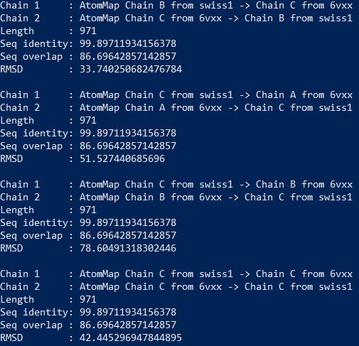

Software Tutorial: Using RMSD to Compare Two Protein Structures
In this tutorial, we will demonstrate how to apply the Kabsch algorithm to compute the RMSD between two protein structures. In particular, we will show how to compare the experimentally validated structure of the SARS-CoV-2 spike protein (PDB entry: 6vxx) against one of our resulting from homology modeling. You should then feel empowered to run this comparison on our other spike protein predictions, as well as compare our ab initio prediction of human hemoglobin subunit alpha against its validated structure (PDB entry: 1si4).
Below is a folder containing all the models that we produced so far along with the experimentally validated structures. Please consult the included README.txt to see which PDB structure to use for comparison against each predicted structure.
Getting started
This tutorial will be our first encounter with ProDy, our featured software resource in this module. ProDy is an open-source Python package that allows users to perform protein structural dynamics analysis. Its flexibility allows users to select specific parts or atoms of the structure for conducting normal mode analysis and structure comparison. If you’re not interested in following along, you can download a Jupyter notebook along with all files needed to run this tutorial below.
To get started, make sure that you have the following software resources installed.
Python (2.7, 3.5, or later)
We recommend that you create a workspace (directory) for storing created files when using ProDy or storing protein .pdb files. Open your computer’s terminal app and navigate to this directory using the cd (if you are new to using a command line interface, please consult this introduction.). Then, start IPython using the following command.
ipython --pylab
First, import needed packages and turn interactive mode on (you only need to do this once per session).
In[#]: from pylab import *
In[#]: from prody import *
In[#]: ion()
Calculating RMSD of two chains
We will first compute RMSD for a single chain of the spike protein homotrimer. Because we are dealing with the entire spike protein, we will need to “match” chains that have the greatest paired similarity between our prediction and the result.
The first built-in ProDy function that we will use, called parsePDB, parses a protein structure in .pdb format. To use our own protein structure, make sure that the .pdb file is in the current directory. Let’s parse in one of our models we obtained from homology modeling of the SARS-CoV-2 Spike protein, SWISS1. You can use your own SARS-CoV-2 Spike protein model that you generated. In this tutorial, our model will be called swiss1.pdb.
In[#]: struct1 = parsePDB(‘swiss1.pdb’)
Because we want to find out how well swiss1.pdb performed, we will compare it to the determined protein structure of SARS-CoV-2 Spike protein in the Protein Data Bank. Enter the code shown below. Because the .pdb extension is missing, this command will prompt the console to search for 6vxx, the SARS-CoV-2 Spike protein, from the Protein Data Bank and download the .pdb file into the current directory. It will then save the structure as the variable struct2.
In[#]: struct2 = parsePDB(‘6vxx’)
With the protein structures parsed, we can now match chains. To do so, we use a built-in function matchChains with a sequence identity threshold of 75% and an overlap threshold of 80% is specified (the default is 90% for both parameters). The following function call stores the result in a 2D array called matches. matches[i] denotes the i-th match found between two chains that are stored as matches[i][0] and matches[i][1].
In[#]: matches = matchChains(struct1, struct2, seqid = 75, overlap = 80)
We will now define our own function that will print matched chains.
In[#]: def printMatch(match):
...: print('Chain 1 : {}'.format(match[0]))
...: print('Chain 2 : {}'.format(match[1]))
...: print('Length : {}'.format(len(match[0])))
...: print('Seq identity: {}'.format(match[2]))
...: print('Seq overlap : {}'.format(match[3]))
...: print('RMSD : {}\n'.format(calcRMSD(match[0], match[1])))
...:
Let’s call our new function printmatch on our previous variable matches.
In[#]: for match in matches:
…: printMatch(match)
…:
You should see the results printed out as follows.


For example, matches[0][0] corresponds to Chain 1 : AtomMap Chain A from swiss1 -> Chain A from 6vxx and matches[5][1] corresponds to Chain 2: AtomMap Chain C from 6vxx -> Chain B from swiss1.
Say that we want to calculate the RMSD score between the matched Chain B from swiss1 and Chain B from 6vxx. This will correspond to matches[4][0] and matches[4][1]. After accessing these two structures, we need to to apply the Kabsch algorithm to superimpose and rotate the two structures so that they are as similar as possible, which we do with the built-in function calcTransformation.
In[#]: first_ca = matches[4][0]
In[#]: second_ca = matches[4][1]
In[#]: calcTransformation(first_ca, second_ca).apply(first_ca);
Now that the best rotation has been found, we can determine the RMSD between the structures using the built-in function calcRMSD.
In[#]: calcRMSD(first_ca, second_ca)
You should now see something like the following:

Merging multiple chains to compute RMSD of an overall structure
Now that we can compare the structures of two chains, it is also possible to merge the chains and calculate the RMSD of the overall homotrimer structure. Below, we merge the three matches corresponding to matching the A chains, B chains, and C chains of the two proteins, and we then compute the RMSD of the resulting structures.
In[#]: first_ca = matches[0][0] + matches[4][0] + matches[8][0]
In[#]: second_ca = matches [0][1] + matches[4][1] + matches[8][1]
In[#]: calcTransformation(first_ca, second_ca).apply(first_ca);
In[#]: calcRMSD(first_ca, second_ca)
Your results should look like the following:

We will leave the RMSD computation for the other models we produced as an exercise.
STOP: Apply what you have learned in this tutorial to compute the RMSD between the SARS-CoV-2 spike protein and every one of our predicted homology models, as well as between human hemoglobin subunit alpha and its ab initio model. Download the predicted models here; you should consult the included readme for reference.
We are now ready to head back to the main text, where we will discuss the RMSD calculations for all models. Were we successful in predicting the structure of the SARS-CoV-2 spike protein?